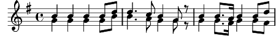

1. Les anges dans nos campagnes
Ont entonné l'hymne des cieux,
Et l'écho de nos montagnes
Redit ce chant mélodieux :
Refrain:
Gloria in excelsis Deo (Bis)
2. Ils annoncent la naissance
Du libérateur d'Israël
Et pleins de reconnaissance
Chantent en ce jour solennel :
Refrain
3. Cherchons tous l'heureux village
Qui l'a vu naître sous ses toits
Offrons-lui le tendre hommage
Et de nos coeurs et de nos voix :
Refrain
4. Bergers, quittez vos retraites,
Unissez-vous à leurs concerts,
Et que vos tendres musettes
Fassent retenir les airs :
Refrain